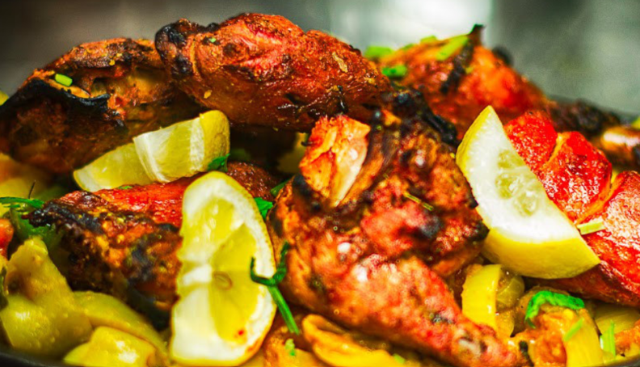

There’s a small restaurant chain tucked away in Colorado that my family and I keep coming back to time and time again: FishTail. It’s not just a place to eat; it’s a cozy spot where tradition and flavor come together in the most delicious ways.
Previously known as Yak and Yeti, the restaurant specializes in Indian and Nepali cuisine, and it truly feels like stepping into another country. The aroma of spices hits you the moment you walk in and the friendly staff make you feel instantly welcome. In fact, we've been there so much they recognize us as regulars. It’s a place where food is treated with utmost care and their culture is honored in every single dish.
Every single visit, my family always gets the same meal, and for good reason. This first thing we order is a basket of papadams, the first thing to arrive, akin to a basket of chips at a Mexican restaurant. They're thin, crispy, and absolutely impossible to eat just one of, and would be enough to satisfy us for the whole night had we not ordered even more.
The garlic naan comes next, which is always soft, buttery, and fresh out of the oven, flawlessly crisp. They're similar in spirit to the papadams, but fluffier and more filling. The real prize of the night, though, is the chicken. Brought out on sizzling pans, you can immediately tell every piece is cooked to perfection in a rich, creamy curry full of flavor. It's especially good if you get it spicy, but everyone else is too afraid to try it.
This place means more to us than just good food. It’s where we’ve gone after long days, where we’ve taken out-of-town visitors, and where we know we’ll always leave satisfied. It’s reliable, it’s comforting, and it never lets us down.
FishTail is the most underrated restaurant I have ever had the pleasure of dining at. If you're ever in the area, check it out at 305 Pavilions Place, Brighton, CO 80601! And make sure to visit their website, thefishtailrestaurant.com!